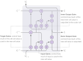

循环神经网络（RNNs）中的记忆机制在许多应用中仍然是一个挑战。我们希望 RNN 能够在多个时间步上存储信息，并在信息变得相关时将其提取出来——但标准的 vanilla RNN 通常难以做到这一点。
人们提出了多种网络架构来解决这个问题的不同方面，例如 Long-Short-Term Memory (LSTM)[[hochreiter1997lstm]] 单元和 Gated Recurrent Units (GRU)[[cho2014gru]]。然而，记忆机制在实践中的问题依然存在。因此，开发更擅长记忆的新型循环单元仍然是一个活跃的研究领域。
为了比较一种循环单元与其替代方案，过去和最近的论文（如 Monzi 等人的 Nested LSTM 论文 [[moniz2018nlstm]]）都 heavily 依赖定量比较。这些比较通常在 Penn Treebank[[penntreebank]]、中文诗歌生成或 text8[[text8]] 等标准问题上衡量准确率或交叉熵损失，任务是根据已有输入预测下一个字符。
虽然定量比较很有用，但它们只能部分揭示循环单元如何进行记忆。例如，一个模型可能仅通过在仅需短期记忆的任务上提供高度准确的预测，就能获得很高的准确率和较低的交叉熵损失，而在需要长期记忆的预测上表现不佳。在句子中自动补全单词时，仅具备短期理解的模型，在大部分字符已知的情况下，补全单词结尾仍能表现出高准确率。然而，如果缺乏较长期的上下文理解，当只有少数字符已知时，它就无法预测出正确的单词。
本文提出了一种定性的可视化方法，用于比较循环单元在记忆能力和上下文理解方面的表现。该方法被应用于上述三种循环单元：Nested LSTM、LSTM 和 GRU。
循环单元
将要分析的网络都采用简单的 RNN 结构：
理论上，这种时间依赖性允许模型在每次迭代中知晓序列中之前的所有部分。然而，这种时间依赖性通常会导致梯度消失问题，使得长期依赖在训练过程中被忽略 [[pascanu2013vanishing]]。
多年来，人们提出了几种解决梯度消失问题的方法。最流行的是前面提到的 LSTM 和 GRU 单元，但这一领域仍是活跃的研究方向。LSTM 和 GRU 都广为人知，并且 在文献中得到了详尽解释。最近，Nested LSTM 也被提出 [[moniz2018nlstm]]——关于 Nested LSTM 的解释可参见附录。

目前尚不完全清楚为什么在某些应用中一种循环单元表现优于另一种，而在其他应用中却是另一种循环单元表现更好。理论上它们都能解决梯度消失问题，但在实践中它们的性能高度依赖于具体应用。
理解这些差异出现的原因很可能是一个不透明且具有挑战性的问题。本文的目的是展示一种可视化技术，它能更好地凸显这些差异是什么。希望这样的理解能够带来更深入的认识。
比较循环单元
比较不同循环单元通常比简单比较准确率或交叉熵损失更为复杂。这些高层定量指标的差异可能有多种解释，可能只是因为在仅需短期上下文理解的任务上预测有了微小改进，而我们往往更关心长期上下文理解能力。
定性分析面临的一个问题
因此，一个适合定性分析上下文理解的好问题，应该具有人类可解释的输出，并且同时依赖于长期和短期的上下文理解。通常使用的典型问题，如 Penn Treebank[[penntreebank]]、中文诗歌生成或 text8 [[text8]] 生成，其输出并不容易进行推理，因为它们需要对语法、中文诗歌有深入理解，或者仅输出单个字母。
为此，本文研究了自动补全（autocomplete）问题。将每个字符映射到一个代表整个单词的目标，单词前面的空格也应映射到同一目标。基于空格字符进行的预测特别有助于展示上下文理解能力。
自动补全问题与 text8 生成问题非常相似：唯一的区别是模型不再预测下一个字母，而是预测整个单词。这使得输出更具可解释性。最后，由于它与 text8 生成密切相关，现有关于 text8 生成的文献与之相关且具有可比性——在 text8 生成上表现良好的模型，在自动补全问题上也应表现良好。
自动补全数据集是从完整的 text8 数据集中构建而来的。用于解决该问题的循环神经网络有两层，每层包含 600 个单元。共有三个模型，分别使用 GRU、LSTM 和 Nested LSTM。更多细节请参见附录。
自动补全问题中的连接性
在最近发表的 Nested LSTM 论文 [[moniz2018nlstm]] 中，他们通过可视化单个细胞激活的方式，定性地将 Nested LSTM 单元与其他循环单元进行比较，以展示其在记忆方面的表现。
这种可视化方法受到 Karpathy 等人的启发 [[karpathy2015rnnvis]]，他们识别出能够捕捉特定特征的细胞。对于识别特定特征，这种可视化方法效果很好。然而，它并不能作为衡量一般记忆能力的有效论据，因为输出完全取决于特定细胞所捕捉的特征。
相反，为了更好地了解每个模型如何进行记忆并利用记忆进行上下文理解，我们分析了期望输出与输入之间的连接性。其计算方式为：
对连接性的探索为不同模型的长期上下文理解能力提供了惊人的洞见。请亲自与下面的图表进行交互，看看不同模型在预测时分别使用了哪些信息。
我们来重点分析三种具体情况：
这些观察表明，连接性可视化是比较模型在上下文理解中利用哪些先前输入的强大工具。然而，它只能在相同数据集上、针对特定示例进行模型比较。因此，虽然这些观察可能显示 Nested LSTM 在此示例中不擅长长期上下文理解，但这些观察未必能推广到其他数据集或超参数设置。
未来工作：定量指标
从上述观察来看，短期上下文理解通常涉及正在被预测的单词本身。也就是说，随着越来越多的字母出现，模型会转而使用已看到的该单词自身的字母。相比之下，在预测一个单词的开头时，模型——尤其是 GRU 网络——会使用之前看到的单词作为预测的上下文。
这一观察暗示了一个定量指标：根据预测单词中已知字母的数量来衡量准确率。目前尚不清楚这是否是最佳的定量指标：它高度依赖于具体问题，而且也不能将模型总结为一个单一数字，而人们可能希望用单一数字进行更直接的比较。
这些结果表明，GRU 模型在长期上下文理解上表现更好，而 LSTM 模型在短期上下文理解上更具优势。这些观察很有价值，因为它解释了为什么 GRU 和 LSTM 模型的整体准确率几乎相同，但连接性可视化却显示 GRU 模型在长期上下文理解上要好得多。
虽然这种更细致的定量指标能提供新的洞见，但像本文中提出的连接性图这样的定性分析仍然具有重要价值。因为连接性可视化能让人直观地理解模型的工作原理，这是定量指标无法做到的。它还表明，一个错误的预测仍然可能是有用的预测，例如同义词或在语境中合理的预测。
结论
仅仅关注整体准确率和交叉熵损失本身并没有那么有意义。不同的模型可能分别侧重长期或短期的上下文理解，而两者却能达到相似的准确率和交叉熵。
因此，在评判模型时，对先前输入如何被用于预测进行定性分析也同样重要。在本例中，连接性可视化结合自动补全预测，揭示出 GRU 模型的长期上下文理解能力远强于 LSTM 和 Nested LSTM。对于 LSTM 而言，这种差异远高于仅通过整体准确率和交叉熵损失所能推测的程度。这一观察本身并不特别有趣，因为它很可能高度依赖于超参数和具体应用场景。
更有价值的是，这种可视化方法能让我们直观地理解模型之间的差异，其程度远高于仅观察准确率和交叉熵。在这个应用中，很明显 GRU 模型在更高程度上利用了重复出现的单词以及过去单词的语义含义来进行预测，这一点远超 LSTM 和 Nested LSTM 模型。这不仅是在选择最终模型时的重要洞见，也是未来开发更好模型时必不可少的知识。